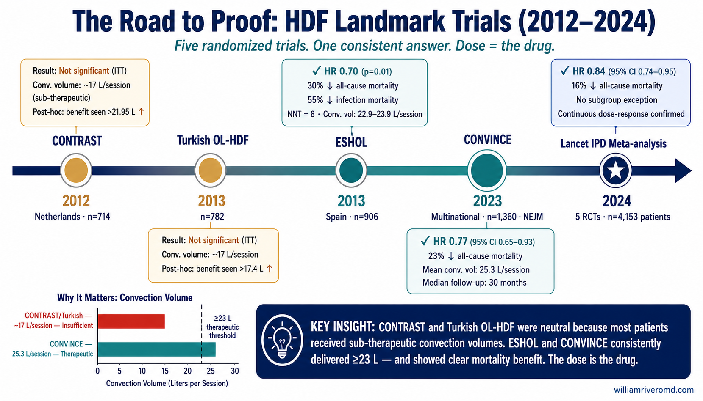
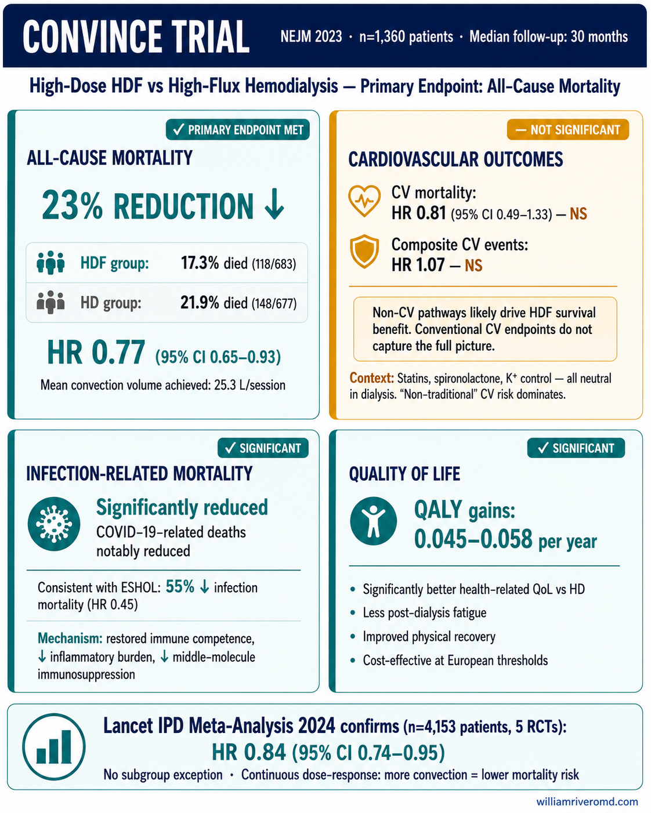
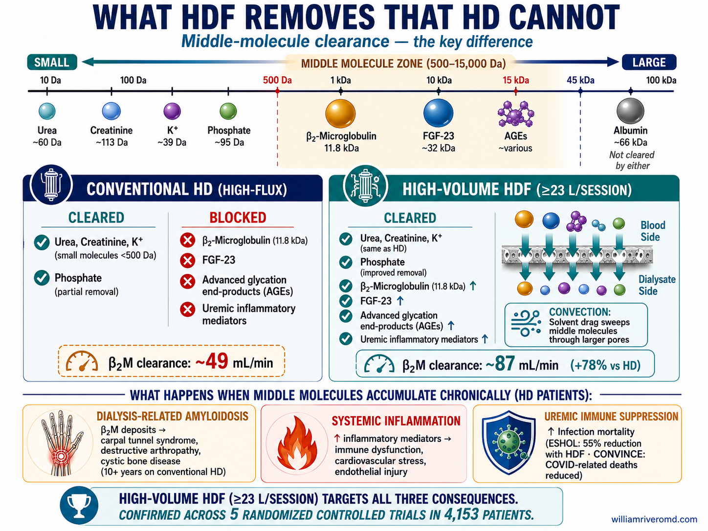
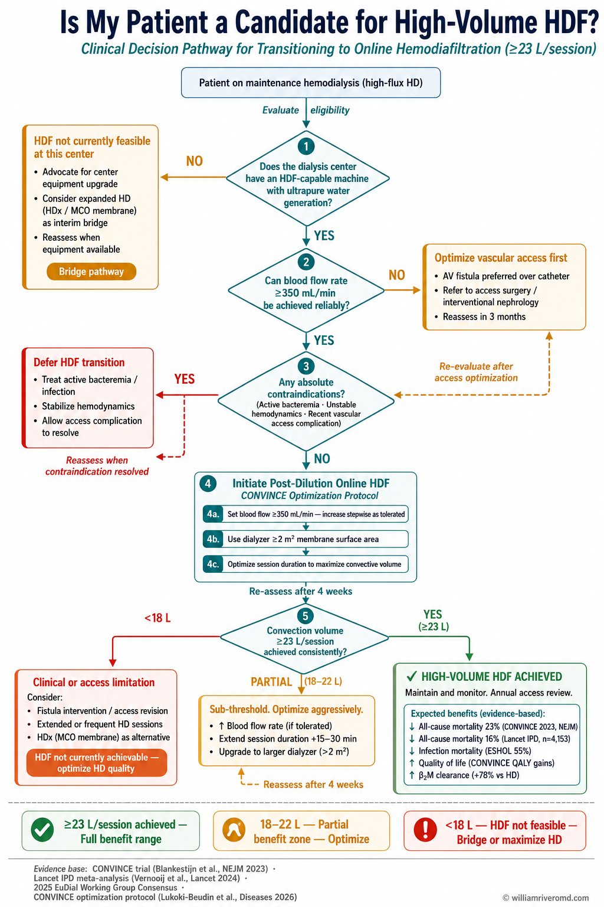

What Is Hemodiafiltration? Ano ang Hemodiapiltrasyon? Unsa ang Hemodiapiltrasyon? Nanu ing Hemodiapiltrasyon?
The simple explanation: If you're on dialysis, you may have heard about a newer type called hemodiafiltration, or HDF. Regular dialysis removes waste from your blood, but it's better at removing small particles. HDF uses a special technique — like adding a 'rinse cycle' — that removes both small AND medium-sized waste products. Clinical trials involving thousands of patients show that HDF can reduce the risk of death by about 23% compared to regular dialysis. This guide explains what the research found and what it means for you. Ang simpleng paliwanag: Kung ikaw ay nasa diyalisis, maaaring narinig mo na ang tungkol sa isang bagong uri na tinatawag na hemodiapiltrasyon, o HDF. Ang regular na diyalisis ay nag-aalis ng basura mula sa iyong dugo, ngunit mas mahusay ito sa pag-aalis ng maliliit na particle. Ang HDF ay gumagamit ng espesyal na pamamaraan — tulad ng pagdaragdag ng 'rinse cycle' — na nag-aalis ng parehong maliit AT medium na mga produktong basura. Ang mga klinikal na pagsubok na kinasasangkutan ng libu-libong pasyente ay nagpapakita na ang HDF ay maaaring mabawasan ang panganib ng kamatayan ng tungkol sa 23% kumpara sa regular na diyalisis. Ang yano nga pagpojpasabut: Kung ikaw naa sa diyalisis, tingali nakadungog ka na bahin sa usa ka bag-ong tipo nga gitawag og hemodiapiltrasyon, o HDF. Ang regular nga diyalisis nagkuha sa basura gikan sa imong dugo, apan mas maayo kini sa pagkuha sa gagmay nga particle. Ang HDF migamit og espesyal nga pamaagi — sama sa pagdugang sa 'rinse cycle' — nga nagkuha sa gamay UG medium nga mga produktong basura. Ang mga klinikal nga pagsulay nga naglakip sa libu-libo nga pasyente nagpakita nga ang HDF mahimong makababa sa risgo sa kamatayon og mga 23% kumpara sa regular nga diyalisis. Ing yano a paliwanag: Nung ikaw ya king diyalisis, maaaring nadinig mu na ing tungkol king metung a bagong klase a tatawagan HDF o hemodiapiltrasyon. Ing regular na diyalisis ya nag-aalis ning basura mibula king daya mu, ngarud mas mahusay iti king pag-aalis ning maliliit a particle. Ing HDF ya gumagamit ning espesyal a pamamaraan — tulad ning pagdaragdag ning 'rinse cycle' — a nag-aalis ning parehong maliliit AT medium a deng produktong basura. Deng klinikal na pagsubok a kinasasangkutan ning libu-libong pasyente ya nagpapakita a ing HDF ya maaaring mabawasan ing panganib ning kamatayan ning tungkol king 23% kumpara sa regular na diyalisis.

What the Clinical Trials Found Ano ang Natuklasan ng mga Klinikal na Pagsubok Unsa ang Natuklasan sa mga Klinikal nga Pagsulay Nanu ing Natuklasan deng Klinikal na Pagsubok
Four major clinical trials tested whether HDF saves lives compared to standard high-flux hemodialysis. The answer, when the dose was high enough, was a clear yes. Apat na pangunahing klinikal na pagsubok ang nagsuri kung ang HDF ay nagliligtas ng buhay kumpara sa standard na high-flux hemodialysis. Ang sagot, kapag sapat ang dosis, ay malinaw na oo. Upat ka mayor nga klinikal nga pagsulay ang nagsusi kung ang HDF nagluwas og kinabuhi kumpara sa standard nga high-flux hemodialysis. Ang tubag, sa diha nga ang dosis taas na, klaro nga oo. Apat a pangunahing klinikal na pagsubok ing nagsuri nung ing HDF ya nagliligtas ning biye kumpara king standard a high-flux hemodialysis. Ing kasagutan, kapag sapat ing dosis, ay malinaw a oo.
Why did early trials seem negative?Bakit ang mga maagang pagsubok ay tila negatibo?Nganong ang mga unang pagsulay daw negatibo?Bakit deng maagang pagsubok ya tila negatibo?
The CONTRAST (2012) and Turkish OL-HDF (2013) trials did not show a benefit in their main analysis because most patients received too little HDF — the "rinse volume" was below the effective dose. ESHOL (2013) and CONVINCE (2023) delivered higher doses and showed clear 23–30% mortality reductions. The dose is the drug.Ang CONTRAST (2012) at Turkish OL-HDF (2013) na mga pagsubok ay hindi nagpakita ng benepisyo sa kanilang pangunahing pagsusuri dahil karamihan sa mga pasyente ay nakatanggap ng masyadong kaunting HDF. Ang ESHOL (2013) at CONVINCE (2023) ay nagbigay ng mas mataas na dosis at nagpakita ng malinaw na 23–30% na pagbaba ng dami ng namamatay. Ang dosis ang gamot.Ang CONTRAST (2012) ug Turkish OL-HDF (2013) nga mga pagsulay wala magpakita og benepisyo tungod sa kadaghanan sa mga pasyente nakadawat og gamay nga HDF. Ang ESHOL (2013) ug CONVINCE (2023) naghatag sa mas taas nga dosis ug nagpakita og klaro nga 23–30% pagkunhod sa kamatayon. Ang dosis ang tambal.Ing CONTRAST (2012) at Turkish OL-HDF (2013) ya ali nagpakita ning benepisyo makapalit dacal king deng pasyente ya nakatanggap ning masyadong kaunting HDF. Ing ESHOL (2013) at CONVINCE (2023) ya nagbigay ning mas mataas na dosis at nagpakita ning malinaw a 23–30% na pagbaba ning dami ning namamatay. Ing dosis ing gamut.

CONVINCE (2023) and the Lancet Meta-Analysis (2024) CONVINCE (2023) at ang Lancet Meta-Analysis (2024) CONVINCE (2023) ug ang Lancet Meta-Analysis (2024) CONVINCE (2023) at ing Lancet Meta-Analysis (2024)
The CONVINCE trial, published in the New England Journal of Medicine in 2023, enrolled 1,360 patients across Europe. It showed a 23% reduction in all-cause mortality (HR 0.77, 95% CI 0.65–0.93) with a mean convection volume of 25.3 L/session. Infection and COVID-related deaths were significantly reduced. Ang CONVINCE na pagsubok, na inilathala sa New England Journal of Medicine noong 2023, ay nag-enroll ng 1,360 na pasyente sa buong Europa. Nagpakita ito ng 23% na pagbaba ng lahat ng uri ng kamatayan na may mean convection volume na 25.3 L/session. Ang CONVINCE nga pagsulay, giimbitalan sa New England Journal of Medicine niadtong 2023, naglakip og 1,360 ka pasyente sa tibuok Europa. Nagpakita kini og 23% pagkunhod sa tanan nga kamatayon nga adunay mean convection volume nga 25.3 L/session. Ing CONVINCE na pagsubok, inilathalang king New England Journal of Medicine king 2023, ya nag-enroll ning 1,360 a pasyente sa buong Europa. Nagpakita iti ning 23% a pagbaba ning lahat ning uri ning kamatayan na may mean convection volume ning 25.3 L/session.
The Lancet IPD Meta-Analysis (2024) — The Definitive SynthesisAng Lancet IPD Meta-Analysis (2024)Ang Lancet IPD Meta-Analysis (2024)Ing Lancet IPD Meta-Analysis (2024)
Five RCTs. 4,153 patients (2,083 HDF vs 2,070 HD). All-cause mortality: HDF 23.3% vs HD 27.0%. HR 0.84 (95% CI 0.74–0.95). No differential effect was seen in any subgroup — age, sex, diabetes, how long on dialysis, prior heart disease, or type of vascular access. A continuous graded dose-response was confirmed: higher convection volume = lower mortality risk. (Vernooij et al., Lancet 2024)Lima na RCT. 4,153 na pasyente. All-cause mortality: HDF 23.3% vs HD 27.0%. HR 0.84 (95% CI 0.74–0.95). Nakumpirma ang patuloy na dose-response: mas mataas na convection volume = mas mababang panganib ng kamatayan.Lima ka RCT. 4,153 ka pasyente. All-cause mortality: HDF 23.3% vs HD 27.0%. HR 0.84 (95% CI 0.74–0.95). Gikumpirma ang padayon nga dose-response: mas taas nga convection volume = mas ubos nga risgo sa kamatayon.Lima a RCT. 4,153 a pasyente. All-cause mortality: HDF 23.3% vs HD 27.0%. HR 0.84 (95% CI 0.74–0.95). Nakumpirma ing patuloy a dose-response: mas mataas a convection volume = mas mababang panganib ning kamatayan.
The strongest signal in dialysis historyAng pinakamalakas na senyales sa kasaysayan ng diyalisisAng pinaka-kusog nga signal sa kasaysayan sa diyalisisIng pinakamalakas a senyales king kasaysayan ning diyalisis
This is the strongest mortality reduction signal from any dialysis intervention in nephrology history. Every major pharmacological trial in dialysis — statins, spironolactone, potassium control — has been neutral. HDF is the first dialysis modification to consistently reduce mortality across multiple large RCTs.Ito ang pinakamalakas na senyales ng pagbaba ng dami ng namamatay mula sa anumang interbensyon sa diyalisis sa kasaysayan ng nefrolohiya. Ang HDF ang unang modipikasyon ng diyalisis na patuloy na nagpababa ng dami ng namamatay sa maraming malalaking RCT.Mao kini ang pinakakusog nga signal sa pagkunhod sa kamatayon gikan sa bisan unsang interbensyon sa diyalisis sa kasaysayan sa nefrolohiya. Ang HDF ang una nga modipikasyon sa diyalisis nga padayon nagpababa sa kamatayon sa daghang dako nga RCT.Iti ing pinakamalakas a senyales ning pagbaba ning dami ning namamatay mibula king anumang interbensyon king diyalisis king kasaysayan ning nefrolohiya. Ing HDF ing nung naging unang modipikasyon ning diyalisis a patuloy a nagpababa ning dami ning namamatay sa maraming malalaking RCT.
Why ≥23 Liters Per Session Matters Bakit Mahalaga ang ≥23 Litro Bawat Session Ngano ang ≥23 Litro Matag Session ang Importante Bakit Mahalaga ing ≥23 Litro Bawat Session
The key to HDF working is the volume of sterile fluid that flows through your blood during each session — the "convection volume." Research shows this needs to reach at least 23 liters per session to achieve the full benefit. Getting your dialysis center to reach this target requires the right equipment, good blood flow through your vascular access, and sometimes slightly longer sessions. Ang susi sa pagganap ng HDF ay ang dami ng sterile na likido na dumadaan sa iyong dugo sa bawat session — ang "convection volume." Ipinakita ng pananaliksik na kailangan itong umabot ng hindi bababa sa 23 litro bawat session upang makamit ang buong benepisyo. Ang yawi sa pagtrabaho sa HDF mao ang gidaghanon sa sterile nga likido nga moagi sa imong dugo sa matag session — ang "convection volume." Ang panukiduki nagpakita nga kinahanglan kini moabot og labing menos 23 litro matag session aron makab-ot ang tibuok nga benepisyo. Ing susi king paggana ning HDF ya ing dami ning sterile a likido a dumadaan king daya mu king bawat session — ing "convection volume." Ipinakita ning pananaliksik a kailangan iting umabot ning hindi bababa sa 23 litro bawat session para makamit ing buong benepisyo.
<17 L/session
Minimal to no benefit. This is why early trials were negative — most patients received sub-therapeutic volumes.Minimal hanggang walang benepisyo. Ito ang dahilan kung bakit negatibo ang mga maagang pagsubok.Minimal ngadto walay benepisyo. Mao kini ang hinungdan nga negatibo ang mga unang pagsulay.Minimal angga ala benepisyo. Iti ing dahilan nung negatibo deng maagang pagsubok.
17–23 L/session
Partial, inconsistent benefit. Some reduction in risk, but not the full 23% seen in high-volume trials.Bahagyang, hindi pare-parehong benepisyo.Bahagi, dili konsistente nga benepisyo.Bahagyang, hindi pare-parehong benepisyo.
≥23 L/session
Consistent, robust mortality reduction of 23%. This is the therapeutic target in ESHOL, CONVINCE, and the 2025 EuDial consensus.Konsistente, matibay na pagbaba ng dami ng namamatay ng 23%.Konsistente, lig-on nga pagkunhod sa kamatayon og 23%.Konsistente, matibay a pagbaba ning dami ning namamatay ning 23%.
Is it achievable in real practice?Makakamit ba ito sa totoong kasanayan?Makab-ot ba kini sa tinuod nga praktis?Makakamit ba iti king totoong kasanayan?
Yes. A 2025 French study (n=67 unselected dialysis patients using the CONVINCE optimization protocol) achieved ≥23 L/session in 62.3% of patients, with a mean of 23.5 L sustained over 6 months. The steps: increase blood flow from 283 to 338 mL/min, use a dialyzer surface area >2 m², and optimize session duration. (Lukoki-Beudin et al., Diseases 2026)Oo. Ang isang 2025 na pag-aaral ng Pranses (n=67 na mga pasyente) ay nakamit ang ≥23 L/session sa 62.3% ng mga pasyente.Oo. Usa ka 2025 nga Pranses nga pagtuon (n=67 ka mga pasyente) nakab-ot ang ≥23 L/session sa 62.3% sa mga pasyente.Oo. Metung a 2025 a pag-aaral ning Pranses (n=67 a mga pasyente) ya nakamit ing ≥23 L/session king 62.3% ning deng pasyente.
What HDF Does — and Doesn't Do Ano ang Ginagawa ng HDF — at Hindi Ginagawa Unsa ang Gibuhat sa HDF — ug Wala Gibuhat Nanu ing Ginagawa ning HDF — at Ali Ginagawa
✅ Proven BenefitsMga Napatunayang BenepisyoMga Napatunayang BenepisyoDeng Napatunayang Benepisyo
- 16–23% reduction in all-cause mortality (consistent across 5 RCTs)16–23% na pagbaba ng lahat ng uri ng kamatayan (consistent sa 5 RCT)16–23% pagkunhod sa tanan nga kamatayon (konsistente sa 5 RCT)16–23% a pagbaba ning lahat ning uri ning kamatayan (consistent sa 5 RCT)
- 30–55% reduction in infection-related mortality (ESHOL, CONVINCE)30–55% na pagbaba ng kamatayan na may kaugnayan sa impeksyon30–55% pagkunhod sa kamatayon nga may kalabtan sa impeksyon30–55% a pagbaba ning kamatayan a may kaugnayan sa impeksyon
- Better removal of β₂-microglobulin and middle moleculesMas mahusay na pag-aalis ng β₂-microglobulin at mga gitnang molekuloMas maayong pagkuha sa β₂-microglobulin ug mga tungatunga nga molekuloMas mahusay a pag-aalis ning β₂-microglobulin at deng gitnang molekulo
- Improved hemodynamic stability (less blood pressure drops during dialysis)Pinahusay na hemodynamic stability (mas kaunting pagbaba ng presyon ng dugo)Pinahusay nga hemodynamic stability (mas gamay nga paghulog sa presyon sa dugo)Pinahusay a hemodynamic stability (mas kaunting pagbaba ning presyon ning daya)
- Better quality of life and QALY gainsMas magandang kalidad ng buhayMas maayong kalidad sa kinabuhiMas magandang kalidad ning biye
- Better phosphate removalMas mahusay na pag-aalis ng phosphateMas maayong pagkuha sa phosphateMas mahusay a pag-aalis ning phosphate
⚠️ Not Yet ProvenHindi Pa NapatunayanWala Pa NapatunayiAli Pa Napatunayan
- Reduction in composite cardiovascular events (CONVINCE HR 1.07, not significant)Pagbaba ng composite cardiovascular events (CONVINCE HR 1.07, hindi significant)Pagkunhod sa composite cardiovascular events (CONVINCE HR 1.07, dili significant)Pagbaba ning composite cardiovascular events (CONVINCE HR 1.07, ali significant)
- Significant reduction in CV-specific mortality (HR 0.81, not significant)Significant na pagbaba ng CV-specific mortality (HR 0.81, hindi significant)Significant nga pagkunhod sa CV-specific mortality (HR 0.81, dili significant)Significant a pagbaba ning CV-specific mortality (HR 0.81, ali significant)
- Prevention of sudden cardiac deathPag-iwas sa biglaang pagtigil ng pusoPaglikay sa kalit nga kamatayon sa pusoPag-iwas king biglang pagtigil ning pusu
- Clear reduction in hospitalizationsMalinaw na pagbaba ng mga hospitalisasyonKlaro nga pagkunhod sa mga hospitalisasyonMalinaw a pagbaba ning deng hospitalisasyon
Why HDF Saves Lives — But Not Through the Heart? Bakit Nagliligtas ng Buhay ang HDF — Ngunit Hindi Sa Pamamagitan ng Puso? Ngano Nagluwa og Kinabuhi ang HDF — Apan Dili Pinaagi sa Puso? Bakit Nagliligtas ning Biye ing HDF — Ngarud Ali Sa Pamamagitan ning Pusu?
One surprising finding from the CONVINCE trial is that HDF reduced deaths overall but did not significantly reduce heart attacks or strokes. This seems confusing — if you live longer, shouldn't your heart be doing better? The explanation reveals something important about why dialysis patients die. Ang isang nakakagulat na natuklasan mula sa CONVINCE trial ay ang HDF ay nagbawas ng mga kamatayan sa kabuuan ngunit hindi makabuluhang nagbawas ng mga atake sa puso o stroke. Usa ka nagulat nga natuklasan gikan sa CONVINCE trial mao nga ang HDF nagpakunhod sa mga kamatayon sa kinatibuk-an apan wala makabuluhang nagpakunhod sa atake sa puso o stroke. Metung a nakakagulat a natuklasan mibula sa CONVINCE trial ya ing HDF ya nagbawas ning deng kamatayan sa kabuuan ngarud ali naman makabuluhang nagbawas ning deng atake sa pusu o stroke.
The likely explanation: HDF fights infection, not plaqueAng malamang na paliwanag: Ang HDF ay lumalaban sa impeksyon, hindi sa plaqueAng posibleng paliwanag: Ang HDF nagsaway sa impeksyon, dili sa plaqueIng malamang a paliwanag: Ing HDF ya lumalaban sa impeksyon, ali sa plaque
Dialysis patients are at high risk of dying from infections and immune system problems — not just heart disease. HDF removes toxic middle molecules that suppress the immune system. The ESHOL trial showed a 55% reduction in infection-related deaths. This immune restoration appears to be HDF's primary life-saving mechanism — not direct cardiovascular protection.Ang mga pasyenteng nasa diyalisis ay nasa mataas na panganib ng pagkamatay mula sa mga impeksyon at mga problema sa immune system. Tinatanggal ng HDF ang mga nakakalason na middle molecules. Ipinakita ng ESHOL trial ang isang 55% na pagbaba ng mga kamatayan na may kaugnayan sa impeksyon.Ang mga pasyente sa diyalisis adunay taas nga risgo sa kamatayon gikan sa mga impeksyon. Ang HDF nagkuha sa mga toksikong middle molecule nga nagpugong sa immune system. Nagpakita ang ESHOL trial og 55% nga pagkunhod sa mga kamatayon nga may kalabtan sa impeksyon.Deng pasyenteng nasa diyalisis ya nasa mataas a panganib ning pagkamatay mibula sa deng impeksyon. Tinatanggal ning HDF deng nakakalason a middle molecules a nagpipigil sa immune system. Ipinakita ning ESHOL trial ing metung a 55% a pagbaba ning deng kamatayan a may kaugnayan sa impeksyon.
What HDF Removes — The Uremic Toxin Story Ano ang Inaaalis ng HDF — Ang Kwento ng Uremic Toxin Unsa ang Gikuha sa HDF — Ang Istorya sa Uremic Toxin Nanu ing Inaalis ning HDF — Ing Kwento ning Uremic Toxin
Regular hemodialysis is very good at removing small waste products (like urea and creatinine). But the body produces many "medium-sized" waste products that regular dialysis cannot remove well. These medium molecules are linked to inflammation, bone disease, heart damage, and nerve damage. HDF's convection mechanism specifically targets these medium-sized molecules. Ang regular na hemodialysis ay napakahusay sa pag-aalis ng maliliit na produktong basura. Ngunit ang katawan ay gumagawa ng maraming "medium-sized" na produktong basura na hindi mahusay na naaalis ng regular na diyalisis. Ang regular nga hemodialysis maayo kaayo sa pagkuha sa gagmay nga mga produktong basura. Apan ang lawas nagmugna og daghang "medium-sized" nga produktong basura nga dili maayo nga makuha sa regular nga diyalisis. Ing regular na hemodialysis ya napakahusay king pag-aalis ning maliliit a deng produktong basura. Ngarud ing katawan ya gumagawa ning maraming "medium-sized" a produktong basura a hindi mahusay a naaalis ning regular na diyalisis.

Dialysis-related amyloidosisDialysis-related amyloidosisDialysis-related amyloidosisDialysis-related amyloidosis
Long-term conventional hemodialysis leads to buildup of β₂-microglobulin in joints and bones, causing carpal tunnel syndrome, joint pain, and destructive arthropathy. This condition — dialysis-related amyloidosis — is largely a disease of inadequate middle molecule clearance. HDF's superior β₂M removal is expected to reduce amyloid burden over time.Ang matagalang conventional hemodialysis ay humahantong sa pag-iipon ng β₂-microglobulin sa mga kasukasuan at buto, na nagdudulot ng carpal tunnel syndrome at destructive arthropathy.Ang dugay nga conventional hemodialysis naghimo sa pag-amot sa β₂-microglobulin sa mga kasukasuan ug bukog, nga nagdala sa carpal tunnel syndrome ug destructive arthropathy.Ing matagalang conventional hemodialysis ya humahantong king pag-iipon ning β₂-microglobulin king deng kasukasuan at buto, a nagdudulot ning carpal tunnel syndrome at destructive arthropathy.
Who Should Get HDF? Sino ang Dapat Makakuha ng HDF? Kinsa ang Kinahanglan Makakuha sa HDF? Ninu ing Dapat Makakuha ning HDF?

Ask your nephrologist: "Am I a candidate for HDF?"Tanungin ang inyong nephrologist: "Ako ba ay kandidato para sa HDF?"Pangutan-a ang imong nephrologist: "Ako ba kandidato para sa HDF?"Itanong king ka nephrologist: "Ako ba kandidato para king HDF?"
- Is HDF available at my dialysis center? (It requires special equipment — now FDA-approved in the USA since 2024)Available ba ang HDF sa aking dialysis center?Available ba ang HDF sa akong dialysis center?Available ba ing HDF king aking dialysis center?
- Do I have good blood flow through my dialysis access? (A fistula or graft delivering ≥350 mL/min is ideal)Mayroon ba akong mabuting daloy ng dugo sa pamamagitan ng aking dialysis access?Aduna ba akoy maayong daloy sa dugo sa akong dialysis access?Mayroon ba akong mabuteng daloy ning daya sa pamamagitan ning aking dialysis access?
- Can I tolerate slightly longer sessions if needed?Kaya ko bang tiisin ang bahagyang mas matagal na mga session kung kinakailangan?Makaya ba nako ang gamay nga mas dugay nga mga session kung kinahanglan?Kaya ko bang tiisin ing bahagyang mas matagal a mga session kung kailangan?
- Does my center have ultrapure water and HDF-capable machines?Mayroon bang ultrapure na tubig at mga makina na may kakayahang HDF ang aking sentro?Aduna ba ang ultrapure nga tubig ug HDF-capable nga mga makina sa akong sentro?Mayroon bang ultrapure a tubig at deng makina a may kakayahang HDF ing aking sentro?
Key Takeaways Mga Pangunahing Aral Mga Key Takeaway Deng Pangunahing Aral
HDF is an advanced form of dialysis that removes more types of wasteAng HDF ay isang advanced na uri ng diyalisis na nag-aalis ng mas maraming uri ng basuraAng HDF usa ka advanced nga klase sa diyalisis nga nagkuha og daghang klase sa basuraIng HDF ya metung a advanced a uri ning diyalisis a nag-aalis ning mas maraming uri ning basura
It combines regular dialysis with a convection mechanism ("rinse cycle") that removes medium-sized waste molecules that regular dialysis misses.Pinagsasama nito ang regular na diyalisis sa isang convection mechanism.Gisagol niini ang regular nga diyalisis sa usa ka convection mechanism.Pinagsasama niti ing regular na diyalisis sa metung a convection mechanism.
Clinical trials in 4,153 patients show a 16–23% reduction in mortality riskAng mga klinikal na pagsubok sa 4,153 na pasyente ay nagpapakita ng 16–23% na pagbaba ng panganib ng kamatayanAng mga klinikal nga pagsulay sa 4,153 ka pasyente nagpakita og 16–23% pagkunhod sa risgo sa kamatayonDeng klinikal na pagsubok king 4,153 a pasyente ya nagpapakita ning 16–23% a pagbaba ning panganib ning kamatayan
This is the largest and most consistent mortality benefit ever seen from any dialysis modification in nephrology history. The Lancet 2024 meta-analysis confirmed no subgroup is excluded from benefit.Ito ang pinakamalaki at pinaka-consistent na benepisyo sa kamatayan na nakita mula sa anumang modipikasyon ng diyalisis.Kini ang pinakadako ug pinaka-konsistente nga benepisyo sa kamatayon gikan sa bisan unsang modipikasyon sa diyalisis.Iti ing pinakamalaki at pinaka-consistent a benepisyo king kamatayan mibula king anumang modipikasyon ning diyalisis.
The key is getting a high enough dose — ≥23 liters per sessionAng susi ay ang pagkuha ng sapat na mataas na dosis — ≥23 litro bawat sessionAng yawi mao ang pagkuha og taas nga dosis — ≥23 litro matag sessionIng susi ya ing pagkuha ning sapat a mataas a dosis — ≥23 litro bawat session
Your center needs the right equipment, good vascular access (preferably a fistula), and sometimes slightly longer sessions.Ang inyong sentro ay nangangailangan ng tamang kagamitan, magandang vascular access.Ang imong sentro nagkinahanglan sa husto nga kagamitan, maayong vascular access.Ing inyong sentro ya kailangan ning tamang kagamitan, magandang vascular access.
HDF was just approved in the USA in 2024Ang HDF ay kamakailan lang naaprubahan sa USA noong 2024Ang HDF bag-o lang gi-approve sa USA niadtong 2024Ing HDF kamakailan lang naaprubahan sa USA king 2024
The FDA granted 510(k) clearance for online HDF machines in 2024. The US dialysis population (~800,000 patients) now has access for the first time. Phased clinical introduction is underway.Ang FDA ay nagbigay ng 510(k) clearance para sa online HDF machines noong 2024.Ang FDA naghatag og 510(k) clearance para sa online HDF machines niadtong 2024.Ing FDA ya nagbigay ning 510(k) clearance para king online HDF machines king 2024.
Ask your nephrologist: "Am I a candidate for HDF at this center?"Tanungin ang inyong nephrologist: "Ako ba ay kandidato para sa HDF sa sentrong ito?"Pangutan-a ang imong nephrologist: "Ako ba kandidato para sa HDF sa sentrong kini?"Itanong king ka nephrologist: "Ako ba kandidato para king HDF king sentro na ini?"
This is the most important action you can take after reading this guide. The Lancet 2024 data shows no subgroup of dialysis patients is excluded from benefit — the question is whether your center has the capability to deliver ≥23 L/session consistently.Ito ang pinakamahalagang aksyon na maaari mong gawin pagkatapos basahin ang gabay na ito.Kini ang pinaka-importante nga aksyon nga imong mahimo human mabasa kining giya.Iti ing pinakamahalagang aksyon a maaari mong gawin pagkatapos basahin ing gabay na ini.